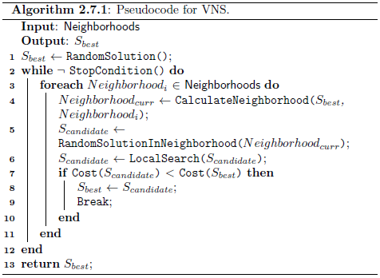

Maintenance Manager @ Grupo Integrado de Transporte Masivo S.A.
Fecha de publicación
December 3, 2023
Taxonomía
Variable Neighborhood Search es una Metaheurística y una técnica de Optimización Global que administra una técnica de Local Search. Está relacionada con el algoritmo de Iterated Local Search.
Estrategia
La estrategia para Variable Neighborhood Search implica la exploración iterativa de vecindarios cada vez más grandes para un óptimo local dado hasta que se localiza una mejora, tras lo cual se repite la búsqueda a través de vecindarios en expansión. La estrategia está motivada por tres principios 1) un mínimo local para una estructura de vecindad puede no ser un mínimo local para una estructura de vecindad diferente, 2) un mínimo global es un mínimo local para todas las estructuras de vecindad posibles, y 3) los mínimos locales están relativamente cerca de los mínimos globales en muchas clases de problemas.
Procedimiento
El pseudocódigo muestra que la búsqueda sistemática de vecindarios en expansión para un óptimo local se abandona cuando se alcanza una mejora global (mostrada con el salto Break).

Pseudocódigo Variable Neighborhood Search
Heurística
Se sugiere el uso de métodos de aproximación (como Stochastic Hill Climbing) como procedimiento de Local Search para instancias de problemas grandes con el fin de reducir el tiempo de ejecución.
Variable Neighborhood Search se ha aplicado a una amplia gama de problemas de optimización combinatoria, así como a problemas de agrupación (clustering) y optimización de funciones continuas.
La técnica de Local Search incrustada debe especializarse según el tipo de problema y la instancia a la que se aplica la técnica.
Variable Neighborhood Descent (VND) se puede incrustar en Variable Neighborhood Search como un procedimiento de Local Search y ha demostrado ser el más eficaz.
Código
El algoritmo se aplica a la instancia Berlin52 de Travling Salesman Problem (TSP), tomada de la TSPLIB. El problema busca una permutación del orden de visita de las ciudades (llamada tour o recorrido) que minimice la distancia total recorrida. La distancia óptima del recorrido para el caso Berlín52 es de 7.542 unidades.
Variable Neighborhood Search utiliza un procedimiento estocástico 2-opt como Local Serach incrustada. El procedimiento elimina dos aristas e invierte la secuencia entre las aristas eliminadas, eliminando potencialmente “giros” en el recorrido. La estructura de vecindad utilizada en la búsqueda es el número de veces que se realiza el procedimiento 2-opt en una permutación, entre 1 y 20 veces. La condición de parada para el procedimiento de Local Search es un número máximo de iteraciones sin mejora.
La misma condición de parada es empleada por el procedimiento de orden superior Variable Neighborhood Search aunque con un límite inferior en el número de iteraciones sin mejora.
# Función para calcular la distancia euclidiana entre dos puntoseuc_2d <-function(c1, c2) {return(round(sqrt((c1[1] - c2[1])^2+ (c1[2] - c2[2])^2)))}# Función para calcular el costo de una permutación de ciudadescost <-function(perm, cities) { distance <-0for (i inseq_along(perm)) { c1 <- perm[i] c2 <-if (i ==length(perm)) perm[1] else perm[i +1] distance <- distance +euc_2d(cities[c1, ], cities[c2, ]) }return(distance)}# Función para generar una permutación aleatoria de las ciudadesrandom_permutation <-function(cities) {return(sample(nrow(cities)))}# Función para realizar una operación de dos-opt estocástica en una permutaciónstochastic_two_opt <-function(perm) { c1 <-sample(length(perm), 1) exclude <-c(c1, if (c1 ==1) length(perm) else c1 -1, if (c1 ==length(perm)) 1else c1 +1) c2 <-sample(length(perm), 1)while (c2 %in% exclude) { c2 <-sample(length(perm), 1) }if (c2 < c1) { temp <- c1 c1 <- c2 c2 <- temp } perm[c1:c2] <-rev(perm[c1:c2])return(perm)}# Función para realizar una búsqueda local en el espacio de las permutacioneslocal_search <-function(best, cities, max_no_improv, neighborhood) { count <-0repeat { candidate <-list() candidate$vector <-stochastic_two_opt(best$vector) candidate$cost <-cost(candidate$vector, cities)if (candidate$cost < best$cost) { count <-0 best <- candidate } else { count <- count +1 }if (count >= max_no_improv) break }return(best)}# Función de búsqueda principalsearch <-function(cities, neighborhoods, max_no_improv, max_no_improv_ls) { best <-list() best$vector <-random_permutation(cities) best$cost <-cost(best$vector, cities) iter <-0 count <-0 stop_loop <-FALSE# Creamos un dataframe para guardar las soluciones solutions <-data.frame(iteration=integer(), cost=double())for (neigh in neighborhoods) {if (stop_loop) {break } candidate <-list() candidate$vector <- best$vectorfor (i inseq_len(neigh)) { candidate$vector <-stochastic_two_opt(candidate$vector) } candidate$cost <-cost(candidate$vector, cities) candidate <-local_search(candidate, cities, max_no_improv_ls, neigh)cat(" > iteration", iter +1, ", neigh=", neigh, ", best=", best$cost, "\n") iter <- iter +1# Guardamos la solución en el dataframe solutions <-rbind(solutions, data.frame(iteration=iter, cost=best$cost))if (candidate$cost < best$cost) { best <- candidate count <-0cat("New best, restarting neighborhood search.\n") } else { count <- count +1 }if (count >= max_no_improv) { stop_loop <-TRUE } }return(solutions)}# Configuración del problemaberlin52 <-matrix(c(565,575,25,185,345,750,945,685,845,655,880,660,25,230,525,1000,580,1175,650,1130,1605,620,1220,580,1465,200,1530,5,845,680,725,370,145,665,415,635,510,875,560,365,300,465,520,585,480,415,835,625,975,580,1215,245,1320,315,1250,400,660,180,410,250,420,555,575,665,1150,1160,700,580,685,595,685,610,770,610,795,645,720,635,760,650,475,960,95,260,875,920,700,500,555,815,830,485,1170,65,830,610,605,625,595,360,1340,725,1740,245), ncol =2, byrow =TRUE)# Configuración del algoritmomax_no_improv <-50max_no_improv_ls <-70neighborhoods <-1:20# Ejecutar el algoritmobest <-search(berlin52, neighborhoods, max_no_improv, max_no_improv_ls)